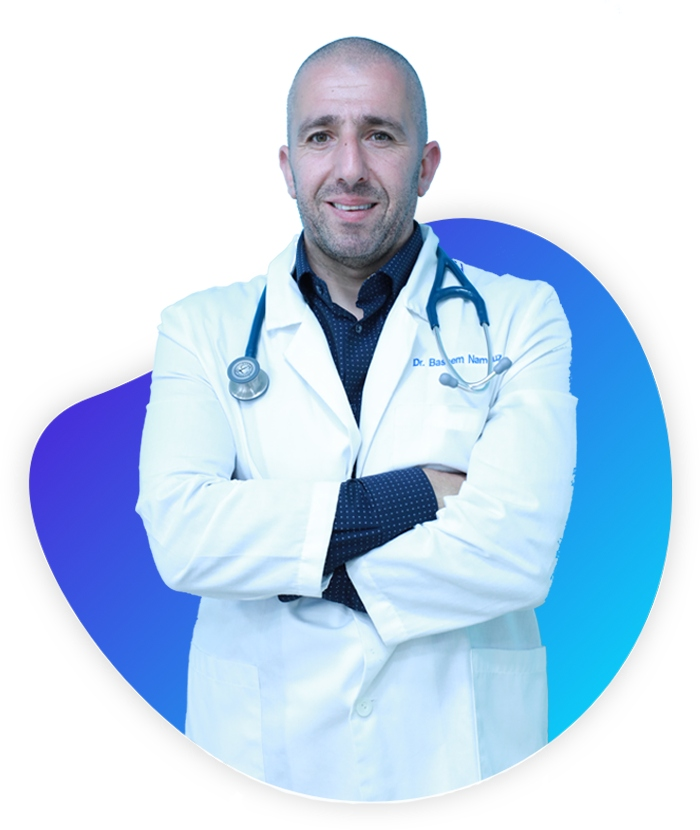

אודות ד״ר בסים נמוז
רופא ילדים מומחה, המעניק ליווי רפואי מקצועי, אישי ורגיש לילדים ולהורים, מתוך תפיסה רחבה של בריאות הילד והמשפחה.

רפואה שמתחילה בהקשבה
אני ד״ר בסים נמוז, רופא ילדים מומחה, ומאמין שרפואה טובה מתחילה קודם כול בהקשבה, באחריות ובקשר אישי עם הילד והמשפחה.
לאורך השנים ליוויתי ילדים והורים במגוון רחב של מצבים רפואיים, מתוך מטרה אחת ברורה: להעניק טיפול מקצועי, מדויק ואנושי, כזה שלא מתמקד רק בסימפטום, אלא רואה את הילד כולו.
מבחינתי, כל פגישה רפואית היא הזדמנות לעצור, להבין, לשאול את השאלות הנכונות, ולהתאים מענה נכון לצרכים של הילד ושל המשפחה. אני מאמין בשיח ברור, בגובה העיניים, ובהסבר שמאפשר להורים להרגיש בטוחים, רגועים ושותפים מלאים בתהליך.
מקצועיות, רגישות וליווי אישי
הקשבה אמיתית
להבין מה עובר על הילד, מה מטריד את ההורים, ומה באמת צריך לקרות כדי לעזור.
בדיקה יסודית
לבחון את התמונה המלאה, לחשוב בצורה רחבה, ולפעול מתוך אחריות מקצועית.
הסבר בגובה העיניים
לתת להורים תחושת ביטחון, סדר והבנה, כדי שיוכלו לקבל החלטות מתוך שקט.
מענה רפואי רחב
רוצים לקבוע תור או לשאול שאלה?
אפשר ליצור קשר עם מזכירת המרפאה בוואטסאפ, בטלפון או במייל, ונשמח לעזור.